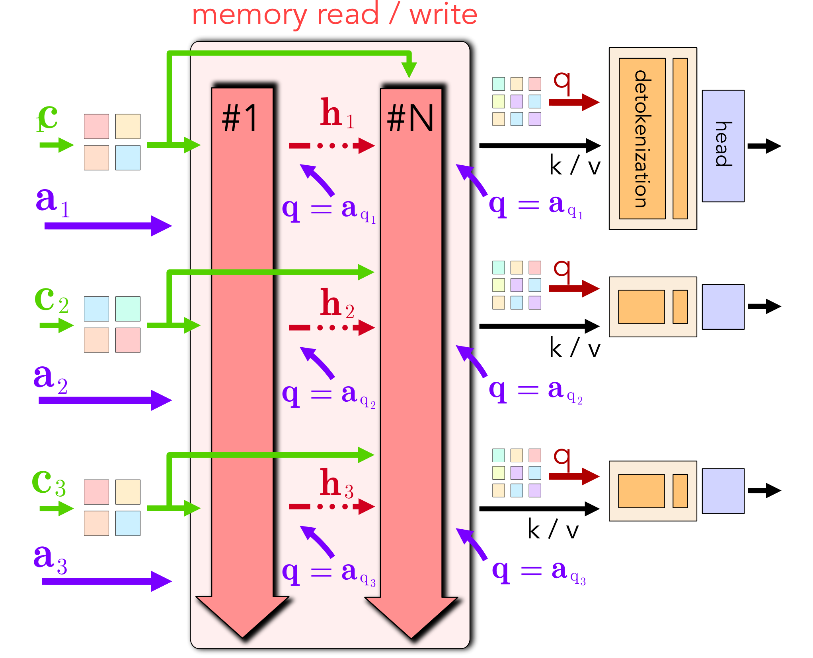

Paper Analysis
01 · The Question Is Where to Read
普通递归状态不断吸收新帧，旧信息可能随着时间被冲淡。SMART 将问题改成“目标相机所在位置能从历史取回什么”，希望与当前观测无关的槽位保持不动。它的全称是 Slot Memory Addressed by Region Tokens。region 指图像分块，不是通过语义分割得到的对象。
输入是视频 latent 与相机参数，输出首先是目标视点的粗略 latent 和置信度，随后生成器输出视频。系统不保存显式点云，也不需要把整个历史留作 attention context；但需要可用相机几何。Minecraft 的生成器虽然以动作为控制，memory 仍按相机几何寻址，不能据此说整个系统仅用动作。
实验使用 Memory Maze 和 Minecraft，回访区域或闭环轨迹占重要位置。论文的 reconstruction 指按目标视图恢复图像，不是恢复带真实误差标定的三维表面。必须区分“图像空间一致性”与“重建几何准确性”。
Paper Analysis
02 · Reading the Original Memory Diagram

Eren Cetin et al. · Original figure, unmodified · CC BY 4.0 · Paper & Caption ↗
Figure 5 左侧绿色 c 是内容表示，紫色 a 是由相机得到的地址；二者进入递归层的职责不同。内容 token 从冻结 VAE 的图像 latent 聚合得到，地址来自相机中心与射线方向组成的 Plücker ray field，再经相机编码器得到区域地址。
相机地址产生写入 key、读取 query 和路由得分，图像内容产生 value 与衰减参数。路由与固定可学习槽位嵌入匹配，避免地址随着槽位内容改变而漂移。每个 head 的每次 token 写入只选择一个槽位。
图右侧给出不同查询下的读出：目标相机经过同一个地址编码器，与状态 keys 做 softmax attention，汇聚 values，再经 detokenizer 和 head 输出目标 latent 与置信度。读取不改状态，所以同一份历史可以接受多个目标相机查询。
正文描述固定分块的 tokenizer；附录另描述带二维 RoPE 的 patch keys 和因果 query attention。二者的精确结合仍需实现核对，不能把“地址只依赖 pose”误写成全网络完全不用二维位置编码。
Paper Analysis
03 · Why Untouched Slots Do Not Forget
选中槽位的写入幅度 r_m 来自获胜路由的 sigmoid 得分，未在槽位间重新归一化；内容预测 δ≤0。令 g_m=δr_m，旧值乘 exp(g_m)，新值乘 1−exp(g_m)。未选中槽位 r_m=0，两个系数分别为 1 和 0，因此该次写入不改变它。
教学例子：前段观测写入槽位 A，之后的一系列区域都路由到 B，A 不会仅因为经历很多步而衰减。再次观察与 A 对应的区域，才会更新 A。但如果一个全新区域也路由到 A，它同样会覆盖旧内容；固定容量并没有消除地址碰撞。
读取 query 与槽位 key 的相似度选择位置相关信息。value 在写入时用相机逆变换放入共同表达，读出时按目标相机重新变换，使旧视角内容有机会被用于新视角。这个操作作用于特征通道，不等于已经求得真实表面对应。
g_m = δ r_m; s_m = 1 − exp(g_m) H_m^k ← exp(g_m) H_m^k + s_m k H_m^v ← exp(g_m) H_m^v + s_m v_canonical r_m = 0 ⇒ unchanged state o = softmax(β q H^k) H^v
Paper Analysis
04 · Training the Memory Before the Generator
训练分两阶段。首先冻结 VAE，将 memory 当作确定性回归器：写入可见历史，给定目标相机，要求读出对应 latent。目标覆盖过去帧、当前帧、回访以及由已见视图支持的新视角；部分连续帧从写入中排除，以测试是否能利用周围观测。
读出回归采用 c[(x−x̂)²+ε]−α log c，c 为预测置信度。降低 c 可减弱难预测位置的误差，但 log 项防止任意逃避。另有 write-free loss：从最终状态重新读取整段，用于训练场景摘要。这一训练辅助项不是在线 rollout 中偷看未来帧。
地址监督要求从地址恢复射线和采样射线点，再加较弱的 VICReg 方差/协方差正则防止地址塌缩。回归损失通过可微读写训练内容与状态；地址目标则明确约束寻址空间。论文使用并行 scan 实现递归训练，不能把“没有显式逐步 unroll”理解为历史没有梯度。
之后冻结 memory，训练生成器根据粗 latent、trust map 和短窗口进行去噪。这个阶段生成 loss 不继续改进 memory 参数；它与“未来几何 loss 端到端训练历史写入”的研究方案不同。
L_memory = L_read^conf + λ_wf L_write-free^conf + L_address L^conf = E[c ((x − x̂)² + ε) − α log c] L_address = λ_pose L_pose + λ_var L_var + λ_cov L_cov
Paper Analysis
05 · Generation, Capacity, and Inference
生成器把 noisy latent、draft latent、trust map 沿通道拼接，而非增加无限历史 token。每次生成 3 个 latent 帧，读取最近 6 个干净 latent 帧，chunk 内双向交互、chunk 间因果。生成完成后把自己的输出写回 memory，所以生成错误也可能进入长期状态。
两数据集使用 8 层、每层 6 heads、每头 16 slots、维度 64，key/value 状态共 98,304 个浮点数。它是递归状态大小，不包含 memory 网络权重、VAE、生成器和激活：论文 memory 模块权重分别约 64.6M 与 132.8M。
训练会扰动上下文与 draft，使生成器不要盲目信任错误读出。Memory Maze 在 64×64 分辨率训练，Minecraft 为 256×256；两者 VAE 时间压缩不同，因此 latent 帧数不能直接当作同样长度的原始视频。
固定状态和短窗口使每步成本不随总时长增长，但不保证无限场景范围都能记住。当访问区域越来越多，槽位复用导致覆盖仍不可避免。
Paper Analysis
06 · The Most Informative Controlled Ablation
Table 3 单独评估 memory 读出，不经过扩散生成器，所有模型在 401 帧 episode 上训练。下表为 PSNR，越高越好。Dense memory 在训练长度略高，但长序列下降明显；移除 SE(3) value warp 也在各长度降低质量。
这个实验支持“稀疏写入和视角变换对回忆有贡献”，比仅展示完整视频更直接。它不证明记忆学到了对象语义，也不能用 memory-only 的高 PSNR 代替最终生成感知质量：回归器可能输出较平滑的图像，扩散模型还要解决细节与真实感。
容量仍重要。附录将 slots 翻倍后，3,201 帧 PSNR 从 31.9 到 33.2。这与槽位碰撞限制相容，不能把稀疏路由描述成完全不受容量影响。
| Memory-only variant | 401 frames ↑ | 1,601 frames ↑ | 3,201 frames ↑ |
|---|---|---|---|
| SMART slots | 32.7 | 32.4 | 31.9 |
| No SE(3) value warp | 31.5 | 30.0 | 29.6 |
| Dense memory | 32.9 | 26.5 | 21.5 |
| Half the heads | 32.2 | 24.5 | 22.9 |
Paper Analysis
07 · Generation Evidence and the Transfer Boundary
Minecraft 使用 256 帧真实 context，再生成到第 2,048 帧。距离 context 769–1,792 帧这一组，SMART PSNR/SSIM 为 14.85/0.503，MilliVid 为 13.84/0.468；但 FID 为 43.33 对 38.85，SMART 更差。中间两个区间的 FVD 也落后，不能将保真度优势概括成所有生成指标最佳。
对我们更有价值的启发是把“存什么”“按什么地址读”“什么 loss 约束写入”分清。SMART 的地址由几何独立决定，内容影响写入强度；它没有使用语言语义教师。所以不能将其称为语义融合 memory 的直接验证。
若将语义加入 LingBot-Map 的写入前特征，可借鉴 memory-only probe：在相同历史预算下，检查当前读出的历史是否支持未来几何，而不是只看当前分割。还要保留端到端几何对照，不能把能解码语义当作几何必然改善。
本次依据论文及附录核对模型和训练，未验证可运行的作者代码。相机漂移、动态物体、真实长场景及更大生成骨干的效果，仍超出这里的直接证据。
Discussion
Reading Questions
Are region tokens object instances?
不是。它们对应图像区域，地址由相机几何产生，没有实例分割监督。
What actually prevents time-based decay?
未被路由选中的槽位写入幅度为零，状态恒等传递；碰撞和重写仍会造成遗忘。
Does generation loss train the memory end to end?
第二阶段 memory 冻结，生成器学习利用它。memory 在第一阶段由读出回归及地址目标训练。
References
One original figure, unmodified, with attribution. Reproduced under CC BY 4.0.
Verified on 2026-10-22. Paper results refer to the linked versions. Repository references were checked on this date.